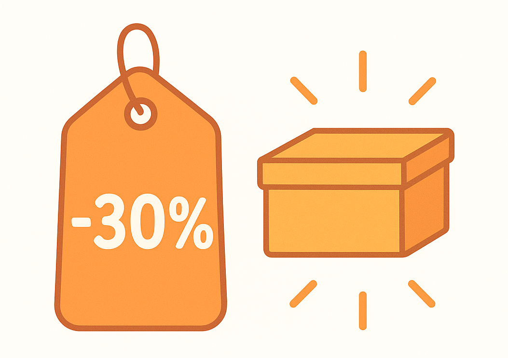

10 Value: Günstig kaufen, gute Unternehmen halten
10.1 Das Prinzip: Warum Schnäppchenjäger oft gewinnen
Manche Menschen haben einen Riecher für gute Käufe.
Sie merken sofort, wenn etwas unterbewertet ist: Sneakers im Sale, eine Jacke im Vintage‑Laden oder der letzte Laptop im Altmodell‑Abverkauf.
Sie wissen: Der Preis ist niedrig, aber der Wert bleibt hoch.

Genau das ist Value‑Investieren: Du suchst Unternehmen, die gut, aber gerade günstig sind.
Nicht, weil etwas nicht stimmt, sondern weil viele andere es übersehen oder unterschätzen.
10.2 Preis vs. Wert –der entscheidende Unterschied
Im Alltag verwechseln viele Menschen diese beiden Wörter.
Preis ist, was du zahlst. Wert ist, was du bekommst.
Ein Smartphone für 400 Euro kann mehr Wert haben als eines für 1 000, wenn es länger hält und genauso gut funktioniert.
An der Börse heißt das: Ein niedriger Aktienpreis bedeutet nicht, dass die Firma schlecht ist - vielleicht ist sie einfach in Vergessenheit geraten oder gerade nicht im Trend.
Warren Buffett – einer der berühmtesten Investoren der Welt – hat einmal gesagt:
„Preis ist, was du zahlst. Wert ist, was du bekommst.“
Sich daran zu erinnern, kann dir viel Geld und Nerven sparen.
10.3 Wie eine Aktie unterbewertet sein kann
Menschen reagieren emotional auf Nachrichten. Wenn eine Firma ein schlechtes Quartal meldet, verkaufen alle. Der Kurs fällt manchmal mehr, als die Nachrichten rechtfertigen.
Ein Value‑Investor denkt: „Interessant! Alle rennen raus – vielleicht kauf ich rein.“
Er prüft nicht den Lärm, sondern die Substanz. Hat das Unternehmen gute Produkte, Kundschaft und Gewinne? Dann ist es vielleicht unterbewertet.

10.5 Warum günstig nicht gleich billig ist
Viele Einsteiger/-innen verwechseln Value‑Aktien mit „billigen“ Aktien.
Billig heißt: geringer Preis, weil Qualität mangelhaft ist.
Günstig heißt: unter wahrem Wert.
Das eine ist Zufall, das andere ist Gelegenheit.
Ein billiger Laden verkauft Ausschuss; ein günstiger verkauft Schätze mit Rabatt.
Dein Ziel ist, den Unterschied zu sehen.
10.6 Warum Value funktioniert
Value‑Strategien profitieren davon, dass Märkte übertreiben. Wenn etwas “out” ist, wird zu stark verkauft - und wenn alle wieder merken, dass das Unternehmen immer noch Gewinne macht, steigen die Preise wieder. Value nutzt diese Emotionen –es ist nicht gegen den Markt, sondern gegen Überreaktionen. Das funktioniert ähnlich wie Shoppen im Sale:
👉 Wenn niemand in den Laden geht, fallen die Preise.
👉 Wer jetzt kauft, bekommt mehr für sein Geld.
👉 Ein Monat später merken alle, dass die Ware gut ist – und der Preis steigt wieder.So funktioniert der Rhythmus am Markt.
10.7 Warren Buffett und die Geduld als Superkraft
Buffett kaufte 1956 erste Beteiligungen an Firmen, die niemand mehr mochte. Ein Beispiel: Coca‑Cola in den 1980ern. Viele sahen die Marke als überholt. Er dagegen erkannte den Markenwert - und hält sie bis heute. Das Investment vervielfachte sich über Jahrzehnte.
Seine Grundregel:
„Kaufe einen Dollar, aber zahle maximal 50 Cent dafür.“
Also: Suche Unternehmen, die mehr wert sind, als du bezahlst – und halte sie lange.
10.8 Value im Alltag
Wir leben ständig nach Value‑Prinzipien, ohne es zu merken:
👉 Du hast einen alten Laptop, der noch super läuft - kein Grund für einen neuen nur wegen Marketing.
👉 Du kaufst gebrauchte Kleidung – gleiche Qualität, halber Preis.
👉 Du nimmst Bücher aus zweiter Hand – gleiche Geschichten, weniger Kosten.In Finanzen ist das nicht anders. Wert besteht weiter, auch wenn der „Preis auf dem Etikett“ kurz fällt.
10.9 Wann Value nicht funktioniert
Es gibt Zeiten, in denen Wachstums‑Themen die Börse begeistern - z. B. Technologie oder Digitalisierung. Value dauert dann länger, bis es aufholt. Das heißt nicht, dass es schlecht ist. Nur Geduld ist entscheidend. Anleger/-innen, die Value zu früh aufgeben, verpassen meist die spätere Erholung. Low Risk = Geduld. Value = Geduld + Analyse.
10.10 Value Traps –die Falle der günstig‑ausschauenden
Manche Aktien sehen günstig aus, sind es aber nicht wert. Zum Beispiel, weil die Firma wirklich Probleme hat - veraltete Produkte, zu hohe Schulden, keine Zukunftsstrategie. Solche Unternehmen sind nicht Schnäppchen, sondern „Value Traps“ – Wertefallen.
Erkennungsmerkmale der Value Traps für Einsteiger:
👉 Negatives Image + fallende Gewinne = Vorsicht.
👉 Kein Innovationsplan = Risiko. Darum nutzen viele Menschen lieber Value‑ETFs – sie streuen automatisch und vermeiden die Fallen.
10.11 Wie Value in deinem Portfolio Platz findet
Value eignet sich als ruhiger Baustein. Im Gegenstück zu Growth oder Momentum bringt es Balance.
Vorschlag:
👉 70 % Basis‑ETF (Welt)
👉 10 % Value‑ETF
👉 10 % Momentum oder Growth‑ETF
👉 10 % Cash oder SicherheitSo kombinierst du „günstig kaufen“ mit „Trends nutzen“ –und reduzierst Extremrisiken.
10.12 Die Psychologie hinter Value
Warum vergessen Menschen Value? Weil Geduld nicht belohnt wird –zumindest kurzfristig. Medien zeigen immer die schnellen Gewinner, nicht die beständigen Sammler/-innen. Ein Value‑Investor arbeitet wie ein Architekt - Stein auf Stein. Das Haus steht nach Jahren, nicht nach Tagen. Diese Ruhe macht Value so effektiv, weil sie gegen den Zeitgeist arbeitet.
10.13 Bekannte Value‑Erfolge (ohne Zahlen)
👉 Coca‑Cola: von Buffett seit den 1980ern gehalten – eine Rendite über Jahrzehnte.
👉 Microsoft: lange unterbewertet, weil viele dachten, die Firma sei „veraltet“ - heute Technologie‑Riese, weil Investor/-innen den Wert erkannten.
👉 Apple (anfangs Value, später Growth): nach 2000 fast vergessen - erneut aufgestiegen, weil Produkte konstant besser wurden.Diese Beispiele zeigen, dass Value Strategien nicht nur Theorie sind –sondern Geduld in Aktion.
10.14 Wie man Value messbar macht
Profis vergleichen den Preis einer Aktie mit ihrem Gewinn oder Buchwert. Privatanleger/-innen können einfacher denken:
👉 Starke Marke?
👉 Langlebiges Produkt?
👉 Solides Geschäft auch in Krisen?Wenn du diese Fragen mit „ja“ beantwortest und der Preis gerade unten ist: Value‑Chance!
10.15 Geduld – die heimliche Rendite
Value braucht Zeit. Der Markt braucht Zeit. Und du brauchst Zeit. Manche Investoren halten ihre Value‑Positionen 10, 20 oder mehr Jahre. Value funktioniert nicht in Wochen, sondern in Lebensphasen.
Aber: der Zinseszinseffekt arbeitet für dich – ruhig und zuverlässig.
10.16 Checkliste für dein Value‑Mindset
✅ Ich will langfristig investieren.
✅ Ich mag keine Marktfalle oder Hype.
✅ Ich suche solide, nicht spektakuläre Unternehmen.
✅ Ich vertraue auf Zeit.
Wenn du alles abhaken kannst: Willkommen im Club der Value‑Denker/-innen.
10.17 Psychologischer Vorteil –Ruhe statt Rausch
Der größte Erfolg von Value liegt nicht nur in Rendite, sondern im Gefühl der Sicherheit. Du musst nicht ständig auf Nachrichten reagieren. Deine Unternehmen verkaufen weiter ihre Produkte, egal was die Börse macht. Das gibt Selbstvertrauen und stärkt Disziplin.
10.18 Value und Nachhaltigkeit
Value ist nicht nur rabattbasiert, sondern auch nachhaltig denkbar: in Firmen, die vernünftig wirtschaften, faire Löhne zahlen und echten Wert erzeugen. Langfristiger Wert bedeutet nicht nur Geld, sondern auch gesellschaftliche Substanz.
10.19 Deine erste Value‑Erfahrung
Willst du üben?
Schau dir deine Alltagsmarken an: Welche nutzt du seit Jahren? Welche würdest du nicht tauschen, egal was Trend ist? Das sind potenzielle Value‑Kandidaten – sie stehen für Konstanz und Kundentreue.
10.20 Was du aus diesem Kapitel mitnehmen solltest
👉 Value = „Wert“ – nicht „billig“.
👉 Kaufe Unternehmen, wenn alle anderen desinteressiert sind, nicht wenn sie Hype sind.
👉 Bleib geduldig – Wert zeigt sich mit Zeit.
👉 Nutze ETFs für einfachen Zugang.
👉 Vermeide „Value‑Traps“.
👉 Rationalität > Emotion = Value Denken.10.21 Zum Nachdenken
„Geduld ist der Zins, den du für Klugheit bekommst.“
Low Risk lehrt Gelassenheit, Value lehrt Beharrlichkeit.
Gemeinsam machen sie dich unerschütterlich – egal, wie laut die Märkte werden.
10.22 Ausblick
Im nächsten Kapitel geht es darum, wie Profis Portfolios bauen - also wie man Low Risk, Momentum, Value und Diversifikation zu einem Ganzen verbindet. Du wirst sehen: Das ist leichter als es klingt – weil du die Bausteine bereits kennst.